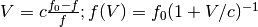

Return the equivalency pairs for the optical convention for velocity.
The optical convention for the relation between velocity and frequency is:

| Parameters: | rest : Quantity
|
|---|
References
NRAO site defining the conventions
Examples
>>> import astropy.units as u
>>> CO_restfreq = 115.27120*u.GHz # rest frequency of 12 CO 1-0 in GHz
>>> optical_CO_equiv = u.doppler_optical(CO_restfreq)
>>> measured_freq = 115.2832*u.GHz
>>> optical_velocity = measured_freq.to(u.km/u.s, equivalencies=optical_CO_equiv)
>>> optical_velocity
<Quantity -31.205843... km / s>